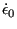

Next: *REFINE MESH Up: Input deck format Previous: *RADIATE Contents
Keyword type: model definition, material
This option is used to define the rate dependence of the yield surface according to the Johnson-Cook model (cf. Section 6.8.10). There is one required parameter TYPE=JOHNSON COOK.
First line:
Following line:

(